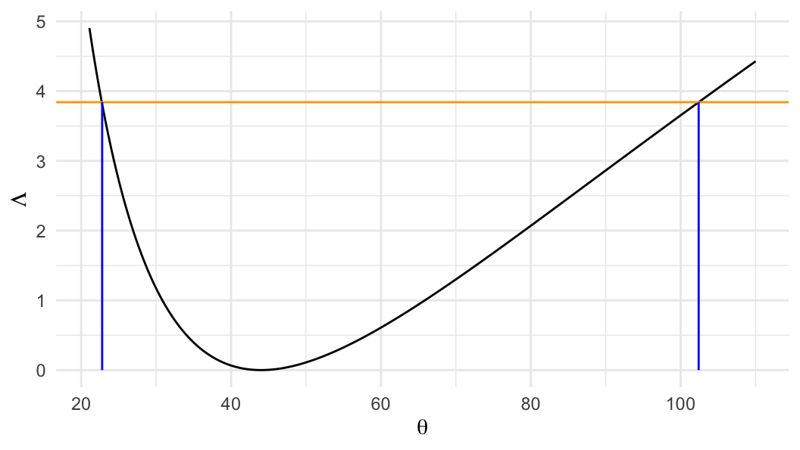
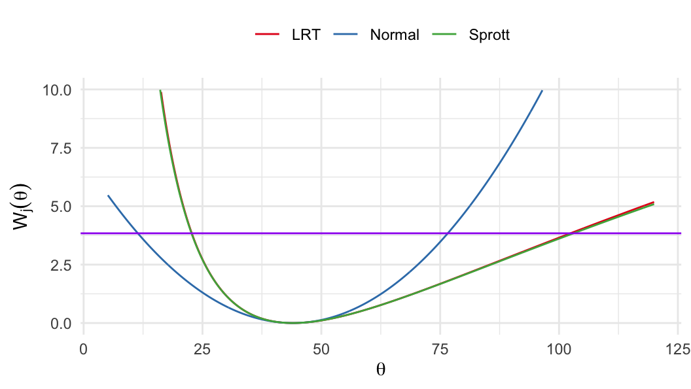
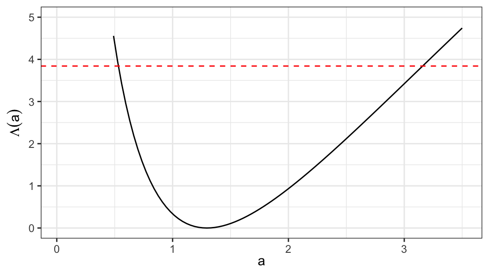
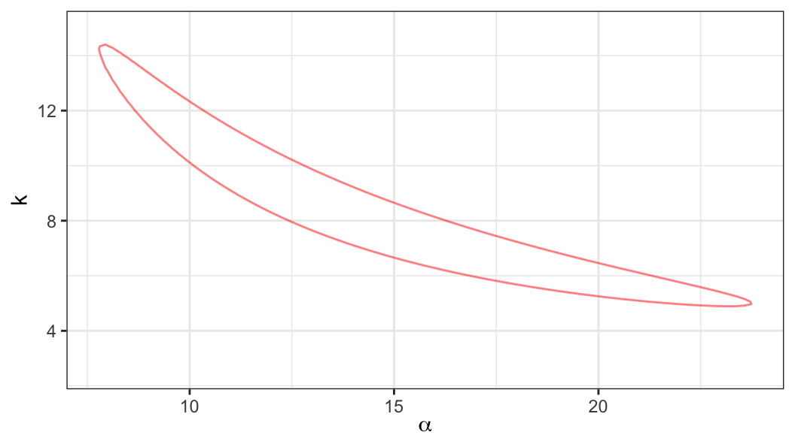
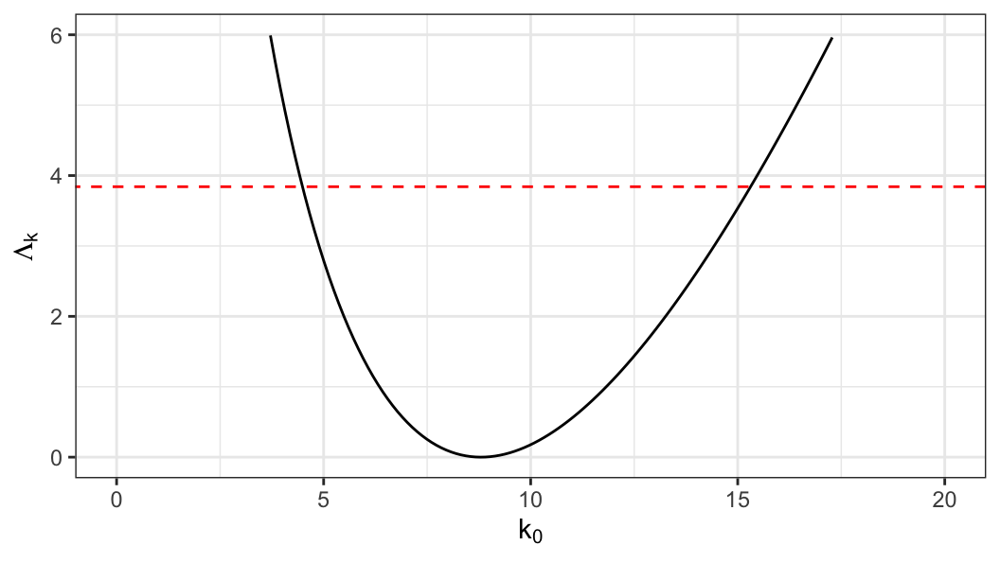
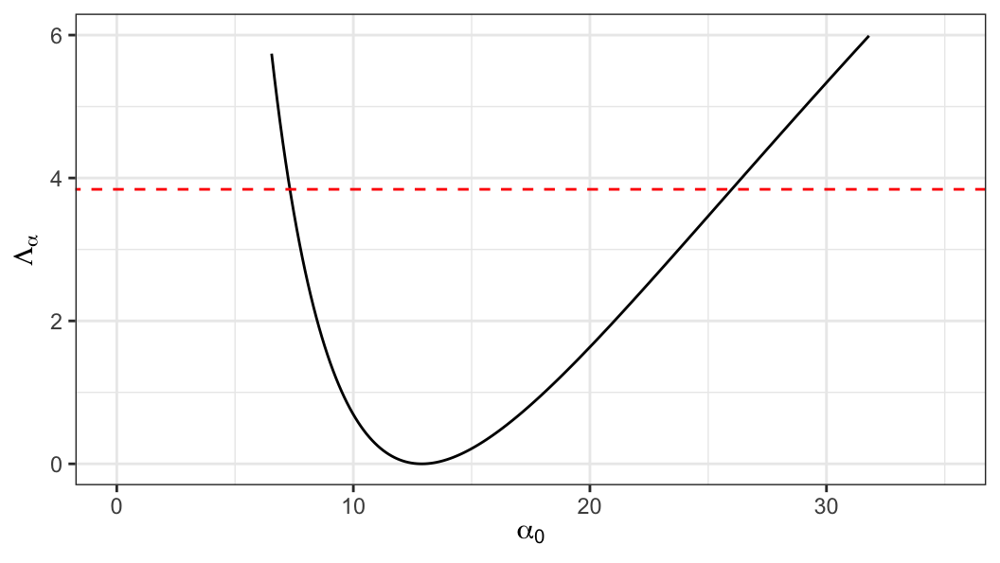
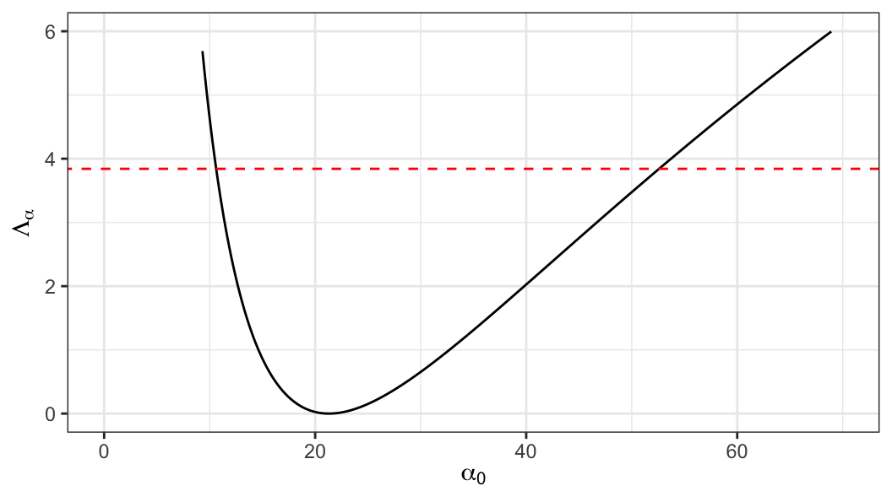
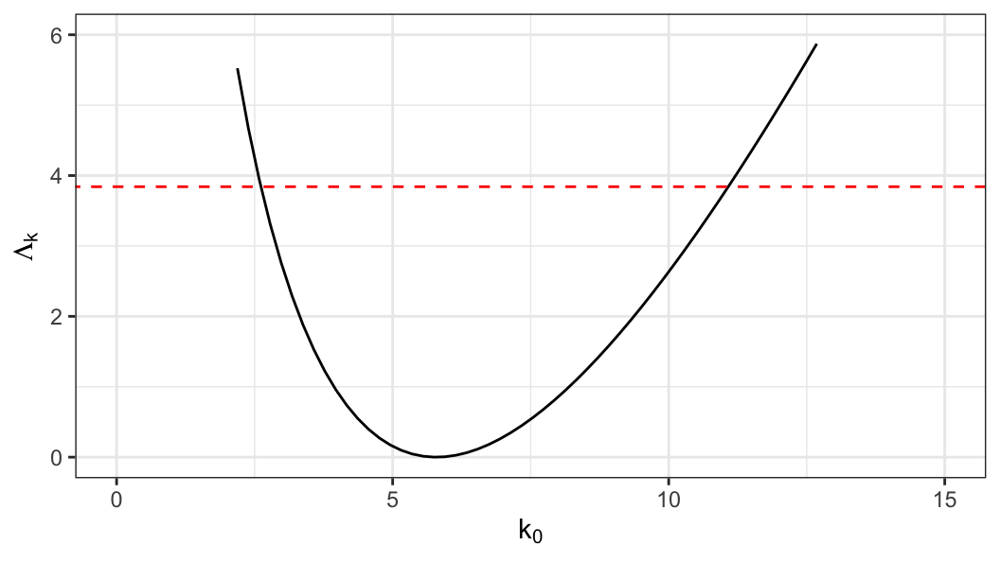

| time | status |
|---|---|
| 2 | 1 |
| 72 | 0 |
| 51 | 1 |
| 60 | 0 |
| 33 | 1 |
| 27 | 1 |
| 14 | 1 |
| 24 | 1 |
| 4 | 1 |
| 21 | 0 |
Chapter 4
(AST305) Lifetime Data Analysis I
4 Inference procedures for parametric models
Introduction
-
Likelihood methods for lifetime data were introduced in Chapter 2, which includes derivation of likelihood function for different types of censored data
Maximum likelihood estimator
Inference about parameters (hypothesis testing and confidence intervals)
Likelihood function (Complete data)
Let \(t_1, \ldots, t_n\) be a random sample from a distribution \(f(t; \boldsymbol{\theta})\), where \(\boldsymbol{\theta}\) is a \(p\)-dimensional vector of parameters
Likelihood and log-likelihood function \[\begin{aligned} L(\boldsymbol{\theta}) &= \prod_{i=1}^n f(t_i; \boldsymbol\theta)\\ \ell(\boldsymbol{\theta}) = \log L(\boldsymbol{\theta})& = \sum_{i=1}^n \log f(t_i;\boldsymbol{\theta}) \end{aligned}\]
Maximum likelihood estimator (MLE) \[\begin{align} \hat{\boldsymbol{\theta}} = {\arg\,\max}_{\boldsymbol{\theta} \in \Theta} \ell(\boldsymbol{\theta}) \end{align}\]
Statistical inference (Complete data)
-
Large sample property of MLE \[\begin{align} \hat{\boldsymbol{\theta}}\sim \mathcal{N}\big(\boldsymbol{\theta}, [\mathcal{I}(\boldsymbol{\theta})]^{-1}\big) \end{align}\]
Fisher expected information matrix \[\begin{align} \mathcal{I}(\boldsymbol{\theta}) = E\Big[-\frac{\partial^2\ell(\boldsymbol{\theta})}{\partial\boldsymbol{\theta}\,\partial\boldsymbol{\theta}'}\Big] \end{align}\]
Observed information matrix \[\begin{align} {I}(\hat{\boldsymbol{\theta}}) = -\frac{\partial^2\ell(\boldsymbol{\theta})}{\partial\boldsymbol{\theta}\,\partial\boldsymbol{\theta}'}\bigg\vert_{\boldsymbol{\theta} = \hat{\boldsymbol{\theta}}} \end{align}\]
Likelihood function (Type I or random censoring)
-
Data: \(\{(t_i, \delta_i),\;i = 1, \ldots, n\}\)
\(t_i\) is a sample realization of \(\tilde{T}_i=\min(T_i, C_i)\)
lifetime \(T_i\) follows a distribution with pdf \(f(t_i; \boldsymbol{\theta})\) and the corresponding survivor function \(S(t_i; \boldsymbol{\theta})\)
censoring time \(C_i\) could be random or fixed depending on the censoring mechanism
\(\delta_i = I(T_i \leq C_i)\), censoring indicator
Data for type I or random censoring \[\big\{(t_i, \delta_i),\;i = 1, \ldots, n\big\}\]
Likelihood function \[\begin{align} L(\boldsymbol{\theta}) & = \prod_{i=1}^n \big[f(t_i;\boldsymbol{\theta})\big]^{\delta_i}\,\big[S(t_i; \boldsymbol{\theta})\big]^{1- \delta_i}\notag \\ & = \prod_{i=1}^n \big[S(t_i;\boldsymbol{\theta})\,h(t_i; \boldsymbol{\theta})\big]^{\delta_i}\,\big[S(t_i; \boldsymbol{\theta})\big]^{1- \delta_i}\notag \\ &= \prod_{i=1}^n \big[S(t_i;\boldsymbol{\theta})\big]\,\big[h(t_i; \boldsymbol{\theta})\big]^{\delta_i} \end{align}\]
Likelihood function (Type II censoring)
Let lifetime \(T_i\) \((i=1, \ldots, n)\) follows a distribution with pdf \(f(t_i; \boldsymbol{\theta})\) and the corresponding survivor function \(S(t_i; \boldsymbol{\theta})\)
The experiment was terminated after observing \(r\) smallest lifetimes
\[ t_{(1)} \leqslant \cdots \leqslant t_{(r)} \]The remaining \((n-r)\) observations are considered as censored at \(t_{(r)}\)
Likelihood function \[\begin{align} L(\boldsymbol{\theta}) = \bigg[\prod_{i=1}^r f(t_{(i)}; \boldsymbol{\theta})\bigg]\,\Big[S(t_{(r)}; \boldsymbol{\theta})\Big]^{n-r} \end{align}\]
Statistical inference (censored sample)
For censored samples, the result “asymptotic distribution of MLE is normal” is still valid
The expression of the Fisher expected information matrix \(\mathcal{I}(\boldsymbol{\theta})\) is complex for censored data, observed information matrix \(I(\hat\theta)\) is used in making inference with censored sample
4.1 Exponential Distribution
The exponential distribution is the first lifetime model for which statistical methodology were extensively developed
Exact tests can be developed for exponential distribution for certain type of censoring mechanism
Exponential distribution assume constant hazard and its use is limited for analyzing real life problems
Probability density function \[ f(t; \theta) = (1/\theta)\,\exp({-t/\theta}) \quad \quad t\geqslant 0,\;\theta>0 \]
Hazard function \[ h(t; \theta) = (1/\theta) \]
Survivor function \[ S(t; \theta) = \exp(-t/\theta) \]
\(p\)th quantile \[ S(t_p;\theta) = 1 - p \;\;{\color{purple}\Rightarrow}\;\; \exp(-t_p/\theta) = 1- p \;{\color{purple}\Rightarrow}\; {\color{blue}t_p = -\theta\log(1-p)} \]
Homework
- Estimation and related inference of exponential distribution when the sample has no censored observations
Type I or random censoring
Lifetime \(T\sim \text{Exp}(\theta)\), \(\theta>0\)
Data: \(\big\{(t_i, \delta_i), i=1, \ldots, n\big\}\)
Likelihood function \[\begin{align} L(\theta) & = \prod_{i=1}^n \big[f(t_i; \theta)\big]^{\delta_i}\,\big[S(t_i;\theta)\big]^{1-\delta_i} \notag \\ &= \prod_{i=1}^n S(t_i;\theta) \,\big[h(t_i;\theta)\big]^{\delta_i} \notag \\ & = \prod_{i=1}^n \exp(-t_i/\theta)\,(1/\theta)^{\delta_i} \end{align}\]
Likelihood function \[\begin{align} L(\theta) & = \prod_{i=1}^n \exp(-t_i/\theta)\,(1/\theta)^{\delta_i}\notag \end{align}\]
-
Log-likelihood function \[\begin{align} \ell(\theta) & = \sum_{i=1}^n\big[-(t_i/\theta) - \delta_i\log(\theta)\big] \notag \\ & = -\frac{1}{\theta} \sum_i t_i -r \log (\theta) \end{align}\]
- \(r = \sum_i \delta_i\;\rightarrow\) the number of failures observed in the sample
Log-likelihood function \[\begin{align} \ell(\theta) & = -\frac{1}{\theta} \sum_i t_i -r \log (\theta)\notag \end{align}\]
-
MLE \[ \frac{\partial\ell(\theta)}{\partial\theta}\Bigg\vert_{\theta=\hat{\theta}} =0 \;\;{\color{purple}\Rightarrow}\;\; \frac{1}{\hat\theta^2}\sum_i t_i - \frac{r}{\hat\theta} = 0 \] \[\begin{align} {\color{purple} \hat\theta = \sum_{i=1}^n t_i/r} \end{align}\]
- Assuming \(r>0\) and no finite MLE exists for \(r = 0\)
- Information matrix
\[\begin{align} I(\theta) &= -\frac{\partial^2\ell(\theta)}{\partial\theta^2} \notag \\ & = -\frac{\partial}{\partial\theta}\Bigg[\frac{1}{\theta^2}\sum_i t_i - \frac{r}{\theta}\Bigg] \notag \\ & = \frac{2}{\theta^3} \sum_i t_i - \frac{r}{\theta^2} \end{align}\]
- Replacing the parameter \(\theta\) by its MLE \(\hat\theta = \sum_i t_i/r\), the observed information matrix becomes \[ {\color{purple} I(\hat\theta) = \frac{r}{\hat{\theta}^2}} \]
Confidence interval (Method I)
Using \(\hat\theta\)’s asymptotic distribution \[\begin{align*} Z_1 = \frac{\theta - \hat\theta}{\big[I(\hat\theta)\big]^{-1/2}} = \frac{\theta - \hat\theta}{\hat\theta/\sqrt{r}} \sim \mathcal{N}(0, 1) \end{align*}\]
For a small sample, \(Z_1\) does not approximate the standard normal distribution very accurately
For a sample with a small number of uncensored observations, \(\ell(\theta)\) tends to be asymmetric
Confidence interval (Method II)
-
Sprott (1980) showed that \(\ell_1(\phi)=\ell(\phi^{-3})\) is more closer to symmetric compared to \(\ell(\theta)\), where \(\phi = \theta^{-1/3}\Rightarrow\,\phi^3=1/\theta\) \[\begin{align} \ell(\theta) & = -(1/\theta)\sum_i t_i - r\log \theta \\ {\color{purple}\ell_1(\phi)} &{\color{purple}= -\phi^3 \sum_i t_i + 3r \log (\phi)} \end{align}\]
MLE \(\;\;\;\;\;\hat\phi = \hat\theta^{-1/3} = \Big[{\sum_i t_i}/{r}\Big]^{-1/3}\)
Observed information matrix \[ \begin{aligned} I_1(\phi) = 6\phi \sum_i t_i + \frac{3r}{\phi^2} \;\;\Rightarrow\;\; {\color{purple}I_1(\hat\phi) = \frac{9r}{\hat\phi^2}} \end{aligned} \]
-
Pivotal quantity \[ Z_2 = \frac{\phi - \hat\phi}{\big[I_1(\hat\phi)\big]^{-1/2}} = \frac{\phi - \hat\phi}{\hat\phi/\sqrt{9r}} \sim \mathcal{N}(0, 1) \]
- Approximation of \(Z_2\) is quite accurate compared to that of \(Z_1\)
Confidence interval (Method III)
- Likelihood ratio statistic \(\Lambda(\theta)=2\ell(\hat\theta) - 2\ell(\theta)\) can also be used to obtain confidence interval for \(\theta\), where \[\begin{align} \ell(\theta) &= -(1/\theta)\sum_i t_i - r\log(\theta)\notag \\ & = -r(\hat\theta/\theta) - r\log(\theta) \\[.25em] \ell(\hat\theta) & = -(1/\hat\theta)\sum_i t_i - r\log(\hat\theta) \notag\\ & = -r - r\log(\hat\theta) \end{align}\]
LRT statistic \[ \begin{aligned} \Lambda(\theta) &= 2\ell(\hat\theta) - 2\ell(\theta) \\ & = 2r\big[(\hat\theta/\theta) - 1 + \log(\theta/\hat\theta)\big] \end{aligned} \]
Two-sided \((1-\alpha)100\%\) confidence intervals are obtained as the set of \(\theta\) values that satisfy \[\Lambda(\theta)\leq \chi^2_{(1), 1-\alpha}\]
Confidence interval of survivor function
Confidence interval for the parameter \(\theta\) can also be used to obtain confidence intervals for a monotone function of \(\theta\), such as \[ S(t; \theta) = \exp(-t/\theta) \;\;\text{or}\;\;h(t; \theta) = 1/\theta \]
Let \(100(1-\alpha)\%\) confidence interval for \(\theta\) \[ L(\text{Data}) \leqslant \theta \leqslant U(\text{Data}), \] where \(\text{Data}=\{(t_i, \delta_i), i=1, \ldots, n\}\)
- \(100(1-\alpha)\%\) confidence interval for \(S(t_0; \theta)=\exp(-t_0/\theta)\) \[ \begin{aligned} L(\text{Data}) &\leqslant \theta \leqslant U(\text{Data}) \\[.25em] t_0/U(\text{Data}) &\leqslant (t_0/\theta) \leqslant t_0/L(\text{Data}) \\[.25em] -t_0/L(\text{Data}) &\leqslant (-t_0/\theta) \leqslant -t_0/U(\text{Data}) \\[.25em] \exp\big(-t_0/L(\text{Data})\big) & \leqslant S(t_0; \theta)\leqslant \exp\big(-t_0/U(\text{Data})\big) \end{aligned} \]
Confidence interval of hazard function
- \(100(1-\alpha)\%\) confidence interval for \(h(t_0; \theta)=1/\theta\) \[ \big(1/U(\text{Data})\big) \leqslant h(t_0; \theta)\leqslant \big(1/L(\text{Data})\big) \]
Example 4.1.1
- Lifetimes (in days) of 10 pieces of equipment
- Assume lifetimes follow exponential distribution with parameter, i.e. \(T_i\sim \text{Exp}(\theta)\)
MLE \[ \hat\theta = \frac{\sum_i t_i}{r} = \frac{308}{7} = 44.0 \]
95% confidence interval of \(\theta\) (Method I)
\[\begin{align*} {\color{purple}\hat\theta \pm z_{.975}[I(\hat\theta)]^{-1/2}} &\;\;\Rightarrow\;\; \hat\theta \pm z_{.975}(\hat\theta/\sqrt{r})\\[.15em] &\;\; \Rightarrow\;\; 44.0 \pm (1.96)(44.0/\sqrt{7})\\[.15em] %&\;\; \Rightarrow\;\; 44.0 \pm 32.60\\ &\;\; \Rightarrow\;\; {\color{purple}11.4 \leqslant \theta \leqslant 76.6} \end{align*}\]
-
95% confidence interval of \(\theta\) (Method II)
\(\hat\phi = \hat\theta^{-1/3} = (44.0)^{-1/3} = 0.283\)
Confidence interval for \(\phi\)
\[ \begin{aligned} {\color{purple}\hat\phi \pm z_{.975}[I_1(\hat\phi)]^{-1/2}} &\;\;\Rightarrow\;\; \hat\phi \pm z_{.975}(\hat\phi/\sqrt{9r})\\[.15em] &\;\; \Rightarrow\;\; 0.28 \pm (1.96)(0.28/\sqrt{63})\\[.15em] %&\;\; \Rightarrow\;\; 0.28 \pm 0.07\\ &\;\; \Rightarrow\;\; {\color{purple}0.21 \leqslant \phi \leqslant 0.35} \end{aligned} \]Confidence interval for \(\theta\)
\[ \begin{aligned} {\color{purple}0.21 \leqslant \phi \leqslant 0.35} &\;\; \Rightarrow\;\; {0.21 \leqslant \theta^{-1/3} \leqslant 0.35} \\[.15em] &\;\; \Rightarrow\;\; {(0.35)^{-3} \leqslant \theta \leqslant (0.21)^{-3}} \\[.15em] &\;\; \Rightarrow\;\; {\color{purple}22.69 \leqslant \theta \leqslant 103.03} \end{aligned} \]
-
Likelihood ratio statistic \[ \Lambda(\theta) = 2r\big[(\hat\theta/\theta) - 1 - \log(\hat\theta/\theta) \big] \]
95% CI for \(\theta\) can be obtained from the set of \(\theta\)’s such that \[ \Lambda(\theta) \leq \chi_{(1), .95}^2 = 3.84 \]
95% CI for \(\theta\) \[ 22.8\;\; \text{to} \;\;102.4 \]

| method | lower | upper |
|---|---|---|
| Normal approx. | 11.40 | 76.60 |
| Sprott | 22.69 | 103.03 |
| LRT | 22.80 | 102.40 |
Methods for CI
Normal approximation \[ W_1(\theta) = \Bigg[\frac{(\hat\theta - \theta)}{\big[I(\hat{\theta})\big]^{-1/2}} \Bigg]^2 = (\hat\theta - \theta)^2 I(\hat\theta) \]
Sprott’s method \[ W_2(\theta) = \Bigg[\frac{(\hat\phi - \phi)}{\big[I_1(\hat{\phi})\big]^{-1/2}} \Bigg]^2 = (\hat\theta^{-1/3} - \theta^{-1/3})^2 I_1(\hat\theta^{-1/3}) \]
LRT \[ W_3(\theta) = 2\ell(\hat\theta) - 2\ell(\theta) = 2r\Big[(\hat\theta/\theta)-1-\log\big(\hat\theta/\theta\big)\Big] \]
\(W_j(\theta) \sim \chi^2_{(1)}\;\;j=1, 2, 3\;\;\text{under $H_0$}\)

Type II censoring plan
Assume lifetime \(T\sim\text{Exp}(\theta)\)
Let \(t_{(1)} < \cdots < t_{(r)}\) be the \(r\) smallest lifetimes observed from an experiment with \(n\;(\geq r)\) subjects
The joint distribution of \(t_{(1)}, \ldots, t_{(r)}\) \[\begin{align} f_T(t_{(1)}, \ldots, t_{(r)}) &= \frac{n!}{(n-r)!}\Big[\prod_{i=1}^r(1/\theta)e^{-t_{(i)}/\theta}\Big]\Big[e^{-t_{(r)}/\theta}\Big]^{n-r} \notag \\[.3em] & = \frac{n!}{(n-r)!} \;\big({1}/{\theta}\big)^r\;e^{-\frac{1}{\theta}\big[{\color{purple}\sum_{i=1}^r t_{(i)} + (n-r)t_{(r)}}\big]}\notag \\[.25em] & = \frac{n!}{(n-r)!} \;\big({1}/{\theta})^r \;e^{-{\color{purple}T_0}/\theta}\label{joint-type2} \end{align}\]
- The log-likelihood function \[\begin{align} \ell(\theta) &= -\frac{1}{\theta}\sum_it_{(i)} -r\log(\theta) - (1/\theta)(n-r)t_{(r)} +\text{Const.} \notag \\ & = -\frac{1}{\theta}\Big[\sum_{i=1}^r t_{(i)} + (n-r) t_{(r)} \Big] -r\log(\theta)+ \text{Const.} \notag \\ & = -\frac{T_0}{\theta} -r\log(\theta) + \text{Const.} \label{logL-type2} \end{align}\]
-
Maximum likelihood estimator \[ \frac{\partial \ell(\theta)}{\partial\theta}\bigg\vert_{\theta = \hat\theta} =0 \;\;\Rightarrow\;\; {\color{purple}\hat\theta = (1/r)\Big[\sum_{i=1}^r t_{(i)} + (n-r) t_{(r)} \Big]} \]
- Observed information matrix \[ I(\hat\theta) = \frac{-\partial^2 \ell(\theta)}{\partial\theta^2}\bigg\vert_{\theta = \hat\theta} = \frac{r}{\hat\theta^2} \]
\((1-\alpha)100\%\) CI for \(\theta\) (by Normal approximation) \[\begin{align}\label{ci_norm_theta} \hat\theta \pm z_{1-\alpha/2} \Big[I(\hat\theta)\Big]^{-1/2} \end{align}\]
Exact confidence interval
Exact confidence interval for \(\theta\) can be derived for uncensored and Type II censored samples, define \[\begin{align*} W_1 & = nt_{(1)} \\ W_2 & = (n-1)\big(t_{(2)} - t_{(1)}\big) \\ \vdots & \\ W_r & = (n-r +1)\big(t_{(r)} - t_{(r-1)}\big) \end{align*}\]
In general \[ W_i = (n - i + 1) \big(t_{(i)} - t_{(i-1)}\big) \;\;i=1, \ldots, r \]
- It can be shown that \[ \sum_{i=1}^r W_i = \sum_{i=1}^r t_{(i)} + (n-r) t_{(r)} = T_0 \tag{4.1}\]
- The joint distribution of \(W_1 = g_1(t_{(1)}, \ldots, t_{(r)}), \ldots, W_r=g_r(t_{(1)}, \ldots, t_{(r)})\) is: \[ f_W(w_1, \ldots, w_r) = f_T\big(g_1^{-1}(w_1, \ldots, w_r), \ldots, g_r^{-1}(w_1, \ldots, w_r)\big) \times\,\big\vert J\big\vert \] where \[ \begin{aligned} J &= \frac{\partial\big(g_1^{-1}(w_1, \ldots, w_r), \ldots, g_r^{-1}(w_1, \ldots, w_r)\big)}{\partial(w_1, \ldots, w_r)} \\[.5em] & = \begin{bmatrix} \frac{\partial g_1^{-1}(w_1, \ldots, w_r)}{\partial w_1} &\frac{\partial g_2^{-1}(w_1, \ldots, w_r)}{\partial w_1} & \cdots & \frac{\partial g_r^{-1}(w_1, \ldots, w_r)}{\partial w_1} \\[.4em] \frac{\partial g_1^{-1}(w_1, \ldots, w_r)}{\partial w_2} &\frac{\partial g_2^{-1}(w_1, \ldots, w_r)}{\partial w_2} & \cdots & \frac{\partial g_r^{-1}(w_1, \ldots, w_r)}{\partial w_2} \\[.2em] \vdots & \vdots & \ddots & \vdots \\ \frac{\partial g_1^{-1}(w_1, \ldots, w_r)}{\partial w_r} &\frac{\partial g_2^{-1}(w_1, \ldots, w_r)}{\partial w_r} & \cdots & \frac{\partial g_r^{-1}(w_1, \ldots, w_r)}{\partial w_r} \end{bmatrix} \end{aligned} \]
\[ \begin{aligned} w_1 &= g_1(t_{(1)}, \ldots, t_{(r)}) = nt_{(1)} \;\;\Rightarrow \;\; t_{(1)} = g_1^{-1}(w_1, \ldots, w_r) = \frac{w_1}{n} \\ w_2 &= g_2(t_{(1)}, \ldots, t_{(r)}) = (n-1)(t_{(2)}-t_{(1)}) \\ & \Rightarrow \; t_{(2)} = g_2^{-1}(w_1, \ldots, w_r) = \frac{w_2}{n-1} + \frac{w_1}{n} \\ \vdots & \\ w_r &= g_r(t_{(1)}, \ldots, t_{(r)}) = (n-r +1)(t_{(r)}-t_{(r-1)}) \\ & \Rightarrow \; t_{(r)} = g_r^{-1}(w_1, \ldots, w_r) = \frac{w_r}{n-r+1} +\cdots + \frac{w_2}{n-1} + \frac{w_1}{n} \end{aligned} \]
\[ \begin{aligned} J & = \begin{bmatrix} \frac{\partial g_1^{-1}(w_1, \ldots, w_r)}{\partial w_1} &\frac{\partial g_2^{-1}(w_1, \ldots, w_r)}{\partial w_1} & \cdots & \frac{\partial g_r^{-1}(w_1, \ldots, w_r)}{\partial w_1} \\[.4em] \frac{\partial g_1^{-1}(w_1, \ldots, w_r)}{\partial w_2} &\frac{\partial g_2^{-1}(w_1, \ldots, w_r)}{\partial w_2} & \cdots & \frac{\partial g_r^{-1}(w_1, \ldots, w_r)}{\partial w_2} \\[.2em] \vdots & \vdots & \ddots & \vdots \\ \frac{\partial g_1^{-1}(w_1, \ldots, w_r)}{\partial w_r} &\frac{\partial g_2^{-1}(w_1, \ldots, w_r)}{\partial w_r} & \cdots & \frac{\partial g_r^{-1}(w_1, \ldots, w_r)}{\partial w_r} \end{bmatrix} \\[.25em] & = \begin{bmatrix} \frac{1}{n} & \frac{1}{n} & \cdots & \frac{1}{n}\\[.3em] 0& \frac{1}{n-1} & \cdots & \frac{1}{n-1} \\ \vdots & \vdots & \ddots & \vdots \\ 0 & 0 & \cdots & \frac{1}{n-r+1} \\ \end{bmatrix} \end{aligned} \]
- We can write \[\begin{align} \big\vert J \big\vert = \frac{1}{n\cdot (n-1)\cdots (n-r+1)} = \frac{(n-r)!}{n!} \end{align}\]
-
The joint distribution of \(W_1 = g_1(t_{(1)}, \ldots, t_{(r)}), \ldots, W_r=g_r(t_{(1)}, \ldots, t_{(r)})\) is \[\begin{align} f_W(w_1, \ldots, w_r) &= f_T\big(g_1^{-1}(w_1, \ldots, w_r), \ldots, g_r^{-1}(w_1, \ldots, w_r)\big)\big\vert J\big\vert \notag \\[.25em] & = \frac{n!}{(n-r)!}\,\frac{1}{\theta^r} \;e^{-\frac{1}{\theta}\big\{\sum_i g_i^{-1}(w_i) + (n-r)g_r^{-1}(w_r)\big\}} \frac{(n-r)!}{n!}\notag \\[.25em] & = {\color{purple}\frac{1}{\theta^r}\;e^{-\sum_i w_i/\theta}} \label{eq-joint-W} \end{align}\]
- Using Equation 4.1
-
Equation \(\ref{eq-joint-W}\) shows that
- \(W_1, \ldots, W_r\) are independent and \({\color{purple}W_i\sim \text{Exp}(\theta)}\)
Since \(W_i\)’ are independent and \(W_i\sim\text{Exp}(\theta)\), so \[ T_0 = \sum_i W_i = \sum_i t_{(i)} + (n-r)t_{(r)} \] follows a gamma distribution with shape parameter \(r\) and scale parameter \(\theta\)
Then using the relationship between gamma and chi-square distribution \[ \frac{2T_0}{\theta} \sim \chi^2_{(2r)} \]
Review
- Moment generating functions for different distributions \[ \begin{aligned} M_X(t) & = E\big[e^{tX}\big]\\ &= \begin{cases} \frac{1}{1-\theta t} &\text{for $X\sim\text{Exp}(\theta)$} \\[.5em] \Big(\frac{1}{1-\theta t}\Big)^r &\text{for $X\sim\text{Gamma}(r, \theta)$} \\[.5em] \Big(\frac{1}{1-2t}\Big)^{r/2} &\text{for $X\sim\chi^2_{(r)}$} \end{cases} \end{aligned} \]
-
Since \(\frac{2T_0}{\theta} \sim \chi^2_{(2r)}\), we can write \[ P\bigg(\chi^2_{(2r), \,\alpha/2} \leq \frac{2T_0}{\theta}\leq \chi^2_{(2r), \,1-\alpha/2}\bigg) = 1-\alpha \]
- \(\chi^2_{(2r), \,p}\;\rightarrow\) \(p\)th quantile of \(\chi^2_{(2r)}\) distribution
\((1-\alpha)100\%\) exact confidence interval for \(\theta\) \[\begin{align} \frac{2T_0}{\chi^2_{(2r), \,1-\alpha/2}}\leq \theta \leq \frac{2T_0}{\chi^2_{(2r), \,\alpha/2}}\label{LRT-ci-theta} \end{align}\]
Example 4.1.3
The first 8 observations in a random sample of 12 lifetimes (in hours) from an assumed exponential distribution are \[ 31,\;58,\;157,\;185,\;300,\;470,\;497,\;673 \]
-
Homework
- Obtain 95% exact and approximate confidence intervals for \(\theta\)
4.1.3 Comparison of distributions
Comparison of two or more lifetime distributions is often of interest in practice
For comparing two or more independent exponential distributions, different methods of hypothesis tests and confidence intervals are available
Likelihood ratio tests
Let \(T_{ij}\) be the lifetime corresponding to the \(j\)th subject of the \(i\)th group \((i=1, \ldots, m;\;j=1, \ldots, n_i)\)
Assume \(T_{ij}\sim \text{Exp}(\theta_i)\) and the null hypothesis of interest \[ H_0: \theta_1 = \cdots = \theta_m \]
Data: \[\{(t_{ij}, \delta_{ij}), i=1, \ldots, m; j=1, \ldots, n_i\}\]
The likelihood function for \(\boldsymbol{\theta}=(\theta_1, \ldots, \theta_m)'\) \[ \begin{aligned} L(\boldsymbol{\theta}) &= \prod_{i=1}^m\prod_{j=1}^{n_i} \Big[f(t_{ij}; \theta_i)\Big]^{\delta_{ij}}\Big[S(t_{ij}; \theta_i\Big]^{1-\delta_{ij}} \\ & = \prod_{i=1}^m\prod_{j=1}^{n_i} \Big[\frac{1}{\theta_i}\Big]^{\delta_{ij}}\,e^{-t_{ij}/\theta_i} \end{aligned} \]
The corresponding log-likelihood function \[\begin{align}\label{logL-theta-m} \ell(\boldsymbol{\theta}) = -\sum_i\sum_j \Big[(t_{ij}/\theta_i) + \delta_{ij}\log(\theta_i)\Big] \end{align}\]
- The log-likelihood function \[
\begin{aligned}
\ell(\boldsymbol{\theta}) &= -\sum_i\sum_j \Big[(t_{ij}/\theta_i) + \delta_{ij}\log(\theta_i)\Big] \\
& = -\sum_i \Big[(T_i/\theta_i) + r_i\log(\theta_i)\Big]
\end{aligned}
\]
- \(T_i = \sum_j t_{ij}\) and \(r_i = \sum_j \delta_{ij}\)
- Maximum likelihood estimator of \(\theta_i\) \((i=1, \ldots, m)\)
\[ \frac{\partial\ell(\boldsymbol{\theta})}{\partial\theta_i}\Bigg\vert_{\theta_i=\hat{\theta}_i} =0 \;\;{\color{purple}\Rightarrow}\;\; \frac{T_i}{\hat\theta^2_i} - \frac{r_i}{\hat\theta_i} = 0\;\;{\color{purple}\Rightarrow}\;\; {\color{purple}\hat\theta_i= (T_i/r_i)} \]
-
Under \[H_0: \theta_1=\cdots = \theta_m=\theta \;(\text{say})\] log-likelihood function \[ \ell(\theta) = -\sum_i\Big[ (T_{i}/\theta) + r_i\log(\theta)\Big] \]
- Under \(H_0\), the MLE of \(\theta\) \[ \tilde\theta = \frac{\sum_i T_i}{\sum_i r_i} \]
-
Likelihood ratio test statistic \[ \begin{aligned} \Lambda &= 2\ell(\hat{\boldsymbol{\theta}}) - 2\ell(\tilde\theta)\\ & = 2\sum_i\Big[-(T_i/\hat\theta_i) -r_i\log(\hat\theta_i) + (T_i/\tilde\theta) + r_i\log(\tilde\theta)\Big]\\ & = 2\sum_i\Big[ -r_i\log(\hat\theta_i) + r_i\log(\tilde\theta)\Big] \end{aligned} \]
- Under \(H_0\), \(\Lambda\sim\chi_{(m-1)}^2\) for a large sample size
Example 4.1.4
Four independent samples of size 10 each had 7 failures
MLE under exponential model \[ \hat\theta_1 = 106,\;\hat\theta_2 = 80,\;\hat\theta_3 = 140, \;\hat\theta_4=158 \]
-
Homework
- Test \(H_0: \theta_1=\cdots=\theta_4\)
Confidence intervals for \(\theta_1/\theta_2\)
Comparison between two exponential distributions \[T_i\sim \text{Exp}(\theta_i),\;i=1, 2\]
It can be shown that MLE \(\hat\theta_i\) approximately follows normal distribution \[\begin{align} \hat\theta_i&\sim \mathcal{N}\big(\theta_i, \theta_i^2/r_i\big)\\[.25em] \log\hat\theta_i&\sim \mathcal{N}\big(\log\theta_i, 1/r_i\big) \end{align}\]
Distribution of \(\log(\hat\theta_1/\hat\theta_2)\) \[\begin{align} \log\hat\theta_1 -\log\hat\theta_2 = \log(\hat\theta_1/\hat\theta_2)\sim\mathcal{N}\Big(\log(\theta_1/\theta_2), \big(r_1^{-1} + r_2^{-1}\big)\Big) \end{align}\]
Null hypothesis \[ \begin{aligned} H_0: \theta_1 = \theta_2 \;\Rightarrow\; H_0: \theta_1 / \theta_2 = 1\;\Rightarrow\; H_0: \log \theta_1 = \log \theta_2 \\ \end{aligned} \]
Test statistic \[ Z=\frac{\log(\hat\theta_1/\hat\theta_2) - \log(\theta_1/\theta_2)}{\big(r_1^{-1} + r_2^{-1}\big)^{1/2}}\sim \mathcal{N}(0, 1) \]
95% CI for \(\log(\theta_1/\theta_2)\) \[ \log(\hat\theta_1/\hat\theta_2) \pm z_{1-\alpha/2}\,\big(r_1^{-1} + r_2^{-1}\big)^{1/2} \tag{4.2}\]
95% CI for \((\theta_1/\theta_2)\) \[ (\hat\theta_1/\hat{\theta}_2) \exp\Big(\pm z_{1-\alpha/2}\,\big(r_1^{-1} + r_2^{-1}\big)^{1/2} \Big) \]
Confidence intervals can also be found by inverting the likelihood ratio test for a hypothesis of the form \[H_0: \theta_1 = a\theta_2\] where \(a>0\)
-
For Type I sample \(\{(t_{ij}, \delta_{ij}), i=1, 2; j=1, \ldots, n_i\}\), the log-likelihood function \[ \ell(\theta_1, \theta_2) = -\sum_{i=1}^2\Big[(T_i/\theta_i) + r_i\log(\theta_i)\Big] \]
- MLE \(\hat\theta_1 = (T_1/r_1)\) and \(\hat\theta_2 = (T_2/r_2)\)
-
Under \(H_0: \theta_1=a\theta_2\), the log-likelihood function \[ \begin{aligned} \ell(a\theta_2, \theta_2) &= -r_1\log(a\theta_2) - (T_1/(a\theta_2)) - r_2\log(\theta_2) - (T_2/\theta_2) \\ & = -(r_1 + r_2)\log(\theta_2) - (T_1/(a\theta_2))- (T_2/\theta_2)-r_1\log (a) \end{aligned} \]
- MLE under \(H_0\) \[\tilde\theta_2 =\frac{T_1 + aT_2}{a(r_1 + r_2)} \;\;{\color{purple}\Rightarrow }\;\;\tilde\theta_1=a\tilde\theta_2 = \frac{T_1 + aT_2}{(r_1 + r_2)}\]
- The likelihood ratio test statistic \[ \Lambda(a) = 2\ell(\hat\theta_1, \hat\theta_2) - 2\ell(\tilde\theta_1, \tilde\theta_2), \] where \[ \begin{aligned} \ell(\hat\theta_1, \hat\theta_2) &= -\sum_{i=1}^2\Big[(T_i/\hat\theta_i) + r_i\log(\hat\theta_i)\Big] \\ & = -(r_1+r_2) -r_1\log(\hat\theta_1) - r_2\log(\hat\theta_2) \end{aligned} \]
and \[ \begin{aligned} \ell(\tilde\theta_1, \tilde\theta_2) & = -\frac{T_1}{\tilde\theta_1} -\frac{T_2}{\tilde\theta_2} - r_1\log(\tilde\theta_1) - r_2\log(\tilde\theta_2)\\ & = -(r_1 + r_2) - r_1\log(\tilde\theta_1) - r_2\log(\tilde\theta_2) \end{aligned} \]
- The likelihood ratio test statistic \[ \begin{aligned} \Lambda(a) &= 2\ell(\hat\theta_1, \hat\theta_2) - 2\ell(\tilde\theta_1, \tilde\theta_2) \\ & = 2r_1\log(\tilde\theta_1/\hat\theta_1) + 2r_2\log(\tilde\theta_2/\hat\theta_2)\\ & = 2r_1\log(a\tilde\theta_2/\hat\theta_1) + 2r_2\log(\tilde\theta_2/\hat\theta_2) \end{aligned} \]
\((1-\alpha)100\%\) confidence interval for \((\theta_1/\theta_2)\) can be construed from the values \(a\) that satisfy \[ \Lambda(a) \leq \chi^2_{(1), 1-\alpha} \tag{4.3}\]
For Type I censored sample, LRT statistics based confidence interval for \((\theta_1/\theta_2)\) Equation 4.3 is more accurate than that of normal approximation Equation 4.2 for small samples
Example 4.1.5
A small clinical trial was conducted to compare the duration of remission achieved by two drugs used in the treatment of leukemia.
Duration of remission is assumed to follow an exponential distribution and two groups of 20 patients produced the followings under a Type I censoring mechanism \[ r_1 = 10, T_1 = 700, r_2 = 10, T_2 = 540 \]
Obtain 95% approximate and exact CI for \((\theta_1/\theta_2)\)
Unrestricted MLEs \[ \hat{\theta}_1 = \frac{T_1}{r_1} = 70 \;\text{and}\;\;\hat{\theta}_2 = \frac{T_2}{r_2} = 54 \]
95% approximate CI for \(\log(\theta_1/\theta_2)\) \[ \begin{aligned} \log(\hat\theta_1/\hat\theta_2) & \pm z_{.975}\big(r_1^{-1} + r_2^{-1}\big)^{1/2} \\[.2em] \log(70 / 54) & \pm (1.96)(10^{-1} + 10^{-1})^{1/2}\\[.2em] 0.26 & \pm 0.877 \end{aligned} \]
- 95% approximate CI (normal distribution based) for \((\theta_1/\theta_2)\) \[ -0.617 <\log(\theta_1/\theta_2) < 1.136 \;\;\;{\color{purple}\Rightarrow}\;\;\; 0.54 <(\theta_1/\theta_2) < 3.114 \]
Is there any significant difference between \(\theta_1\) and \(\theta_2\)?
Likelihood ratio statistic based confidence interval for \((\theta_1/\theta_2)\) requires estimate of the parameters under the null hypothesis \[ H_0: \theta_1 = a\theta_2 \]
Estimates under \(H_0\) \[ \tilde\theta_2 =\frac{T_1 + aT_2}{a(r_1 + r_2)} \;\;{\color{purple}\Rightarrow }\;\;\tilde\theta_1=a\tilde\theta_2 = \frac{T_1 + aT_2}{(r_1 + r_2)} \]
Likelihood ratio statistic \[ \begin{aligned} \Lambda(a) &= 2r_1\log(a\tilde\theta_2/\hat\theta_1) + 2r_2\log(\tilde\theta_2/\hat\theta_2) \end{aligned} \]
| \(a\) | \(\Lambda(a)\) | \(a\) | \(\Lambda(a)\) |
|---|---|---|---|
| 0.525 | 3.953 | 3.185 | 3.911 |
| 0.560 | 3.424 | 3.150 | 3.819 |
| 0.595 | 2.958 | 3.115 | 3.726 |
| 0.630 | 2.549 | 3.080 | 3.633 |
| 0.665 | 2.187 | 3.045 | 3.541 |
| 0.700 | 1.869 | 3.010 | 3.448 |
| 0.735 | 1.589 | 2.975 | 3.356 |
| 0.770 | 1.341 | 2.940 | 3.263 |

- 95% of \((\theta_1/\theta_2)\) is the range of values of \(a=(\theta_1/\theta_2)\), such that \[ \Lambda(a) \leq \chi^2_{(1), .95} = 3.84 \] which is \[ 0.56 < a < 3.15\;\;\Rightarrow\;\;0.56 < (\theta_1/\theta_2) < 3.15 \]
| method | lower | upper |
|---|---|---|
| Normal approximation | 0.54 | 3.114 |
| LRT | 0.56 | 3.150 |
Type II censored sample (CI for \(\theta_1/\theta_2\))
Lifetime distributions \(T_{i}\sim \text{Exp}(\theta_i)\;i=1, 2\)
Type II censored sample for the group \(i\), which has \(r_i\) number of failures and \((n_i-r_i)\) subjects are censored at \(t_{(ir_i)}\) \[ t_{(i1)}<\cdots<t_{(ir_i)} \]
- Likelihood function \[ \begin{aligned} L(\theta_1, \theta_2) & = \prod_{i=1}^2 (1/\theta_i)^{r_i}\,e^{-\sum_jt_{(ij)}/\theta_i} \;\;e^{-(n_i-r_i)t_{(ir_i)}/\theta_i} \\ & = \prod_{i=1}^2 (1/\theta_i)^{r_i}\,e^{-(1/\theta_i)\big[\sum_jt_{(ij)}+(n_i-r_i)t_{(ir_i)}\big]} \\ & = \prod_{i=1}^2 (1/\theta_i)^{r_i}\,e^{-T_i/\theta_i} \end{aligned} \]
MLE \[ \hat\theta_i = \frac{T_i}{r_i} \]
We have already shown that \[ \frac{2T_i}{\theta_i} = \frac{2r_i\hat\theta_i}{\theta_i}\sim \chi_{(2r_i)}^2 \]
Then we can show \[ \frac{(2r_1\hat\theta_1/\theta_1)/(2r_1)}{(2r_2\hat\theta_2/\theta_2)/(2r_2)} = \frac{\hat\theta_1\theta_2}{\hat\theta_2\theta_1}\sim F_{(2r_1, 2r_2)} \]
We can write \[ P\Big(F_{(2r_1, 2r_2), \alpha/2} \leq \frac{\hat\theta_1\theta_2}{\hat\theta_2\theta_1} \leq F_{(2r_1, 2r_2), 1-\alpha/2} \Big) = 1-\alpha \]
\((1-\alpha)100\%\) confidence interval for \((\theta_1/\theta_2)\) \[\begin{align} \frac{(\hat\theta_1/\hat\theta_2)}{F_{(2r_1, 2r_2), 1-\alpha/2}} \leq (\theta_1/\theta_2) \leq \frac{(\hat\theta_1/\hat\theta_2)}{F_{(2r_1, 2r_2), \alpha/2}} \end{align}\]
4.2 Gamma Distribution (Uncensored Data)
-
The pdf of two-parameter gamma distribution \[ f(t; \alpha, k) = \frac{1}{\alpha\Gamma(k)}\;\bigg(\frac{t}{\alpha}\bigg)^{k-1}\exp\big(-t/\alpha\big), \qquad t>0 \]
- Scale parameter \(\alpha >0\) and shape parameter \(k>0\)
Survivor function \[\begin{align} S(t; \alpha, k) &= \int_t^\infty \,f(u; \alpha, k)\,du\notag\\[.2em] & = \int_t^\infty \frac{1}{\alpha\Gamma(k)}\;\bigg(\frac{u}{\alpha}\bigg)^{k-1}\exp\big(-u/\alpha\big) \,du\notag\\[.2em] & = 1 - I(k, t/\alpha) \end{align}\]
Incomplete gamma function \[ I(k, x) = \frac{1}{\Gamma(k)}\int_{0}^x u^{k-1} e^{-u}\,du \]
-
Let \(t_1, \ldots, t_n\) be a random sample from \(\text{Gamma}(\alpha, k)\), the log-likelihood function \[\begin{align} \ell(\alpha, k) & = \sum_{i=1}^n\log f(t_i; \alpha, k) \notag \\[.2em] & = \sum_{i=1}^n\log \bigg[ \frac{1}{\alpha\Gamma(k)}\;\bigg(\frac{t_i}{\alpha}\bigg)^{k-1}\exp\big(-t_i/\alpha\big) \bigg]\notag \\[.25em] %& = -n\log\Gamma{k} - nk\log \alpha + (k-1)\sum_i \log t_i -\sum_i(t_i/\alpha)\notag\\[.25em] & = -n\log\Gamma{k} - nk\log \alpha + n(k-1)\log \tilde{t} - n\bar{t}/\alpha \end{align}\]
- \(\tilde{t}=\Big(\prod_{i=1}^nt_i\Big)^{1/n}\) and \(\;\;\bar{t} = (1/n)\sum_i t_i\)
\[ {\color{purple}\ell(\alpha, k) = -n\log\Gamma{k} - nk\log \alpha + n(k-1)\log \tilde{t} - n\bar{t}/\alpha } \]
- Score functions \[\begin{align} U_1(\alpha, k) &= \frac{\partial\ell(\alpha, k)}{\partial \alpha} = \frac{-nk}{\alpha} + \frac{n\bar{t}}{\alpha^2}\notag \\[.25em] U_2(\alpha, k) &= \frac{\partial\ell(\alpha, k)}{\partial k} = -n\psi(k) -n\log\alpha +n \log\tilde{t}\notag \end{align}\] where \(\psi(k) = \Gamma'(k)/\Gamma(k)\) is the digamma function (see Appendix B of the Textbook)
-
MLE \((\hat\alpha, \hat k)\) is a solution of the system of linear equations \[\begin{align} \frac{-n\hat k}{\hat\alpha} + \frac{n\bar{t}}{\hat\alpha^2} &= 0 \\[.25em] -n\psi(\hat k) -n\log\hat\alpha +n \log\tilde{t} & = 0 \end{align}\]
Two equations and two unknowns
Equations are non-linear in terms of the variables
No closed form solutions
1. Substitution method
\[ \frac{-n\hat k}{\hat\alpha} + \frac{n\bar{t}}{\hat\alpha^2} = 0\;\Rightarrow\; \hat{\alpha} = \frac{\bar{t}}{\hat k} \tag{4.4}\]
\[ -n\psi(\hat k) -n\log\hat\alpha +n \log\tilde{t} = 0 \;\Rightarrow\; {\color{purple}\psi(\hat k) - \log\hat k =\log(\tilde{t}/\bar{t})} \tag{4.5}\]
Solve Equation 4.5 using a suitable optimization technique (e.g. graphical method, Newton-Raphson method, etc.) to obtain \(\hat k\)
Then \(\hat\alpha\) can be obtained from Equation 4.4
2. Newton-Raphson method
- Score functions \[\begin{align} U_1(\alpha, k) &= \frac{\partial\ell(\alpha, k)}{\partial \alpha} = \frac{-nk}{\alpha} + \frac{n\bar{t}}{\alpha^2}\notag \\[.25em] U_2(\alpha, k) &= \frac{\partial\ell(\alpha, k)}{\partial k} = -n\psi(k) -n\log\alpha +n \log\tilde{t}\notag \end{align}\]
- Elements of Hessian matrix \[\begin{align} H_{11}(\alpha, k) &= \frac{\partial^2\ell(\alpha, k)}{\partial \alpha^2} = \frac{nk}{\alpha^2} - \frac{2n\bar{t}}{\alpha^3}\notag \\[.25em] H_{12}(\alpha, k) &= \frac{\partial^2\ell(\alpha, k)}{\partial \alpha\;\partial k} = \frac{-n}{\alpha} =H_{21} (\alpha, k) \notag \\[.25em] H_{22}(\alpha, k) &= \frac{\partial^2\ell(\alpha, k)}{\partial k^2} = -n\psi'(k) \end{align}\]
Score vector \[ U(\alpha, k) = \begin{bmatrix} U_1(\alpha, k) \\ U_2(\alpha, k)\end{bmatrix} \]
Hessian matrix \[ H(\alpha, k) = \begin{bmatrix} H_{11}(\alpha, k) & H_{12}(\alpha, k)\\ H_{21}(\alpha, k) & H_{22}(\alpha, k) \end{bmatrix} \]
Score vector and information matrix are function of parameters and data
Initial values \(\boldsymbol{\theta}^{(0)} = (\alpha^{(0)}, k^{(0)})'\) are chosen so that elements of score vector and hessian matrix are finite
Updated estimate \(\boldsymbol{\theta}^{(1)} = (\alpha^{(1)}, k^{(1)})'\) is obtained as \[ \boldsymbol{\theta}^{(1)} = \boldsymbol{\theta}^{(0)} - \Big[H\big(\boldsymbol{\theta}^{(0)}\big)\Big]^{-1}\,U\big(\boldsymbol{\theta}^{(0)}\big) %\begin{bmatrix} %\alpha^{(1)}\\ k^{(1)} %\end{bmatrix} = \begin{bmatrix}\alpha^{(0)}\\ k^{(0)} \end{bmatrix} - \Big[H(\alpha^{(0)}, %k^{(0)})\Big]^{-1}\,U(\alpha^{(0)}, k^{(0)}) \tag{4.6}\]
The estimate \(\boldsymbol{\theta}^{(2)}\) can be obtained by using \(\boldsymbol{\theta}^{(1)}\) as input in Equation 4.6
Repeating the procedure of evaluating the Equation 4.6 using the current estimate, the following sequence of estimates can be obtained \[\big\{\boldsymbol{\theta}^{(j)}, j= 3, 4, 5, \ldots\Big\}\]
- A convergence criterion needs to be defined to obtain the MLE from the sequence of estimates \[\Big\{\boldsymbol{\theta}^{(j)}, j= 1, 2, 3, \ldots\Big\},\]
Convergence criteria are defined on the basis of two successive values of the parameters estimates
-
\(\boldsymbol{\theta}^{(j)}=\big(\hat\alpha, \hat k\big)'\) is considered as MLE if one of the following criteria is satisfied
\(\big\vert\boldsymbol{\theta}^{(j)} - \boldsymbol{\theta}^{(j-1)}\big\vert\;\text{is very small}\)
\(\big\vert\ell\big(\boldsymbol{\theta}^{(j)}\big) - \ell\big(\boldsymbol{\theta}^{(j-1)}\big)\big\vert\;\text{is very small}\)
\(U\big(\boldsymbol{\theta}_j\big) \approx \boldsymbol{0}\)
- Estimated variance-covariance matrix of the MLE \(\big(\hat\alpha, \hat k\big)'\) can be obtained from the inverse of the negative of the hessian matrix evaluated at the MLE \[ \widehat{\text{Var}}\begin{pmatrix}\hat\alpha \\ \hat k\end{pmatrix} = -\Big[H\big(\hat\alpha, \hat k\big)\Big]^{-1} \]
Newton-Raphson method: Pseudo code
1: theta0 <- `initial value of the parameter`
2: eps <- 1
3: while (eps > 1e-5) {
4: u0 <- U(theta0)
5: h0 <- H(theta0)
6: theta1 <- theta0 - inv(h0) %*% u0
7: eps <- max(abs(theta1 - theta0))
8: if (eps < 1e-5) break
9: else theta0 <- theta1
10: }
11: return (list(theta0, h0))-
Statistical software have routines (such as
optim()of R) that can optimize likelihood function to obtain MLESuch routines require providing a “function” of likelihood function as an argument
Different optimization algorithms, such as Newton-Raphson, Mead-Nelder, simulated annealing, etc. are implemented in optimization routines
Statistical inference
Asymptotic distributions of MLEs, i.e. \[\hat\alpha \sim\mathcal{N}\big(\alpha, \text{var}(\hat\alpha)\big)\;\;\text{and}\;\ \hat k \sim\mathcal{N}\big(k, \text{var}(\hat k)\big)\]
-
Since \(\alpha>0\) and \(k>0\), confidence intervals based on the sampling distribution of \(\log \hat\alpha\) and \(\log \hat k\) ensure non-negative lower limit of the confidence interval \[\log\hat\alpha \sim\mathcal{N}\big(\log\alpha, \text{var}(\log\hat\alpha)\big)\;\;\text{and}\;\ \log \hat k \sim\mathcal{N}\big(\log k, \text{var}(\log \hat k)\big)\]
- \(\text{var}(\log\hat\alpha) = (1/\hat\alpha)^2\,\text{var}(\hat\alpha)\)
- \((1-\alpha)100\%\) confidence interval for \(\log\alpha\)
\[ \log\hat\alpha \pm z_{1-\alpha/2}\,\text{SE}(\log\hat\alpha) \]
- \((1-\alpha)100\%\) confidence interval for \(\alpha\)
\[ \hat\alpha \exp\big(\pm z_{1-\alpha/2}\,\text{SE}(\log\hat\alpha)\big) \]
Example 4.2.1
Following are survival time of 20 male rats that were exposed to a high level of radiation
rtime <- c(152, 152, 115, 109, 137, 88, 94, 77, 160, 165, 125, 40, 128, 123, 136, 101, 62, 153, 83, 69)
rtime [1] 152 152 115 109 137 88 94 77 160 165 125 40 128 123 136 101 62 153 83
[20] 69- Assume the lifetimes follow a gamma distribution with scale parameter \(\alpha\) and shape parameter \(k\)
From the data: \(\;\bar t = 113.45 \;\;\text{and}\;\; \tilde t = 107.07\)
Expressions of the score function \[ \begin{aligned} \hat\alpha =(\bar{t}/\hat k) &= 113.45/\hat k \\[.25em] \psi(\hat k) - \log \hat k - \log(\tilde t/\bar{t}) & = 0 \notag \\[.25em] \psi(\hat k) - \log \hat k + 0.058 & = 0 \end{aligned} \tag{4.7}\]
- R function
uniroot()can be used to obtain the value of \(\hat k\) by solving the Equation 4.7
\[ \hat k = 8.799\;\Rightarrow\; \hat\alpha = 12.893 \]
k_hat$root
[1] 8.799215
$f.root
[1] 8.181174e-10
$iter
[1] 7
$init.it
[1] NA
$estim.prec
[1] 6.103516e-05Log-likelihood function of gamma distribution
- R function to calculate log-likelihood function of a gamma distribution for a given sample
paris a vector with the parameterscaleas the first element andshapeas the second elementtimeis the observed failure timesgamma_loglkfunction can be evaluated for any given valid values ofparandtime
- For given values of parameters, say \((\alpha_0=1, k_0=2.)\), the value of log-likelihood function can be obtained for the rat data
gamma_loglk(par = c(1, 2), time = rtime)[1] -2175.531- For another set of values \((\alpha_0=100, k_0 = 80)\), the corresponding value of log-likelihood function
gamma_loglk(par = c(100, 80), time = rtime)[1] -5392.711
optim() function
- R function
optim()is a general purpose optimization routine
par\(\rightarrow\) initial values for the parameters to be optimizedfn\(\rightarrow\) a function to be minimizedgr\(\rightarrow\) a function to return the gradient (score function)method\(\rightarrow\) a method to be used, e.g. “Nelder-Mead”, “BFGS”, “CG”, “L-BFGS-B”, etc.lowerandupper\(\rightarrow\) lower and upper limit of the parameters to be optimizedcontrol\(\rightarrow\) list of arguments (e.g.fnscale, etc.) for controlling the iterations
Initial values
Initial values of the parameters can be selected from the exploratory plots of log-likelihood function
The log-likelihood function must provide finite values with the initial values of the parameters
- As an example, assume the initial values \(\alpha_0=12.9\) and \(k_0=8.8\), and the corresponding value of log-likelihood function
gamma_loglk(par = c(12.9, 8.8), time = rtime)[1] -100.48- For another set of initial values, \(\alpha_0=1.0\) and \(k_0=1.0\)
gamma_loglk(par = c(1.0, 1.0), time = rtime)[1] -2269- Since both sets of initial values can provide finite values of log-likelihood function, we can use either of these two as an initial value for optimizing the log-likelihood function using the R function
optim()
Example 4.2.1 using optim()
- Fit of the gamma distribution to the rat data
- List of objects in
gamma_fit
names(gamma_fit)[1] "par" "value" "counts" "convergence" "message"
[6] "hessian" - Converged?
gamma_fit$convergence[1] 0- Estimate of scale and shape parameters
gamma_fit$par[1] 12.896976 8.795312- \(\hat\alpha = 12.897\) and \(\hat k = 8.795\)
- Estimated variance-variance matrix
cvar <- solve(-gamma_fit$hessian)
cvar [,1] [,2]
[1,] 16.88167 -10.871356
[2,] -10.87136 7.416138\(\text{SE}(\hat\alpha) = \sqrt{16.882} = 4.109\)
\(\text{SE}(\hat k) = \sqrt{7.416} = 2.723\)
\(95\%\) CI for \(\alpha\) and \(k\)
Using the sampling distribution of \(\hat\alpha\) and \(\hat k\) \[ \begin{aligned} \hat\alpha \pm z_{1-\alpha/2} \,\text{SE}(\hat\alpha) \;\;\Rightarrow\;\;4.84 \leq \alpha \leq 20.95 \\[.25em] \hat k \pm z_{1-\alpha/2} \,\text{SE}(\hat k) \;\;\Rightarrow\;\;3.46 \leq \alpha \leq 14.13 \end{aligned} \]
Using the sampling distribution of \(\log\hat\alpha\) and \(\log \hat k\) \[ \begin{aligned} \hat\alpha \exp\big(\pm z_{1-\alpha/2} \,\text{SE}(\log\hat\alpha)\big) \;\;\Rightarrow\;\;6.91 \leq \alpha \leq 24.08 \\[.25em] \hat k \exp\big(\pm z_{1-\alpha/2} \,\text{SE}(\hat k)\big) \;\;\Rightarrow\;\;4.79 \leq k \leq 16.14 \end{aligned} \]
Quantiles
-
\(p\)th quantile \[\begin{align} S(t_p; \alpha, k) = (1 - p) &\;\;\Rightarrow\;\; \frac{1}{\Gamma(k)}\int_{t_p/\alpha}^\infty u^{k-1}\;e^{-u}\;du = (1-p) \notag \\[.25em] & \;\;\Rightarrow\;\; (t_p/\alpha) = Q(p, k) \notag \\[.25em] & \;\;\Rightarrow\;\; t_p = \alpha Q(p, k) \end{align}\]
-
\(Q(p, k)\) is the \(p\)th quantile function of one-parameter gamma distribution [R function
qgamma(p, scale=1, shape)]
-
\(Q(p, k)\) is the \(p\)th quantile function of one-parameter gamma distribution [R function
Estimate of the median for the rat data is \(\hat t_{.5} = \hat\alpha \, Q(.5, \hat k)\)
12.893951 * qgamma(.5, scale = 1, shape = 8.799089) [1] 109.1872qgamma(.5, scale = 12.893951, shape = 8.799089)[1] 109.1872Likelihood ratio statistic
Likelihood ratio statistic \[ \Lambda(\alpha, k) = 2\ell(\hat\alpha, \hat k) - 2\ell(\alpha, k) %= -2r(\alpha, k) \]
Approximate \((1-p)100\%\) confidence region for \((\alpha, k)'\) can be obtained from the set of points \((\alpha, k)\) satisfying \[ \Lambda(\alpha, k) \leq \chi^2_{(2), 1-p} \]

LRT statistic based CI for \(k\)
Consider the following null hypothesis \[ H_0 : k = k_0 \]
MLEs (unrestricted and under restriction) \[\begin{align} (\hat\alpha, \hat k) = {\arg\,\max}_{(\alpha, k) \in \Theta} \ell(\alpha, k) \;\;\;\;\text{under $H_1$} \\[.25em] \tilde\alpha(k_0) = {\arg\,\max}_{\alpha \in \Theta_{\alpha}} \ell(\alpha, k_0) \;\;\;\;\text{under $H_0$} \end{align}\]
-
Likelihood ratio statistic \[\begin{align} \Lambda_k(k_0) = 2\ell(\hat\alpha, \hat k) - 2\ell(\tilde{\alpha}(k_0), k_0) \end{align}\]
- Under \(H_0: k = k_0\), \(\Lambda_k(k_0)\) approximately follows a \(\chi^2_{(1)}\) distribution
An approximate two-sided \((1-p)100\%\) confidence interval for \(k\) can be obtained from a set of values of \(k_0\) satisfying \[\begin{align} \Lambda_k(k_0) \leq \chi^2_{(1), 1-p} \end{align}\]

\[ \text{95\% CI}: \;\;4.54 \leq k \leq 15.28 \]
LRT statistic based CI for \(\alpha\)
Consider the following null hypothesis \[ H_0 : \alpha = \alpha_0 \]
MLEs (unrestricted and under restriction) \[\begin{align} (\hat\alpha, \hat k) = {\arg\,\max}_{(\alpha, k) \in \Theta} \ell(\alpha, k) \;\;\;\;\text{under $H_1$} \\[.25em] \tilde k(\alpha_0) = {\arg\,\max}_{k \in \Theta_{k}} \ell(\alpha_0, k) \;\;\;\;\text{under $H_0$} \end{align}\]
-
Likelihood ratio statistic \[\begin{align} \Lambda_{\alpha}(\alpha_0) = 2\ell(\hat\alpha, \hat k) - 2\ell(\alpha_0, \tilde{k}(\alpha_0)) \end{align}\]
- Under \(H_0: \alpha = \alpha_0\), \(\Lambda_{\alpha}(\alpha_0)\) approximately follows a \(\chi^2_{(1)}\) distribution
An approximate two-sided \((1-p)100\%\) confidence interval for \(\alpha\) can be obtained from a set of values of \(\alpha_0\) satisfying \[\begin{align} \Lambda_{\alpha}(\alpha_0) \leq \chi^2_{(1), 1-p} \end{align}\]

\[ \text{95\% CI}: \;\;7.37 \leq \alpha \leq 25.9 \]
Summary of \(95\%\) CI
For \(\alpha\) \[ \begin{aligned} \text{no-transformation}:\;\; & 4.84 \leq \alpha \leq 20.95 \\[.25em] \text{log-transformation}: \;\; &6.91 \leq \alpha \leq 24.08 \\[.25em] \text{LRT}: \;\; & 7.37 \leq \alpha \leq 25.9 \end{aligned} \]
For \(k\) \[ \begin{aligned} \text{no-transformation}:\;\; & 3.46 \leq k \leq 14.13 \\[.25em] \text{log-transformation}: \;\; &4.79 \leq k \leq 16.14 \\[.25em] \text{LRT}: \;\; & 4.54 \leq k \leq 15.28 \end{aligned} \]
Gamma Distribution (Censored Data)
Data \(\{(t_i, \delta_i), \;i=1, \ldots, n\}\) and the corresponding log-likelihood function \[\begin{align} \ell(\alpha, k) & = \log \prod_{i=1}^n\bigg[\frac{1}{\alpha\Gamma{(k)}}\Big(\frac{t_i}{\alpha}\Big)^{k-1}e^{-t_i/\alpha}\bigg]^{\delta_i}\Big[1- I(k, t_i/\alpha) \Big]^{1-\delta_i}\notag \\[.25em] & = -k\log \alpha -r\log \Gamma{(k)} + (k-1)\sum_i\delta_i\log t_i\notag \\[.1em] &\;\;\;\;\;\;\;-\sum_i\delta_i t_i/\alpha + \sum_i (1-\delta_i)\log \Big[1- I(k, t_i/\alpha) \Big]\label{gamma-llk-cens} \end{align}\]
No closed form solutions are available for MLEs \(\hat\alpha\) and \(\hat k\)
Algebraic expressions of score function and information matrix for the log-likelihood function \(\eqref{gamma-llk-cens}\) are very complicated
Score functions and information matrix can be evaluated numerically
-
Optimization routines available in statistical software can be used to obtain MLEs \(\hat \alpha\) and \(\hat k\), and the corresponding SEs
- Different optimization algorithms such as Newton-Raphson, Nelder-Mead, etc. are available in such routines
As an example, we are going to use the same rat data that we have used for the analysis of complete data
-
For the rat data, assume a time \(\geq 150\) weeks is considered as censored, there are 5 censored observations
- An R object
rtimecis created, which has two columnstimeandstatus
- An R object
rtimec |> dplyr::glimpse()Rows: 20
Columns: 2
$ time <dbl> 152, 152, 115, 109, 137, 88, 94, 77, 160, 165, 125, 40, 128, 12…
$ status <dbl> 0, 0, 1, 1, 1, 1, 1, 1, 0, 0, 1, 1, 1, 1, 1, 1, 1, 0, 1, 1gamma log-likelihood function for censored sample
gamma_loglk <- function(par, time, status = NULL) {
#
if (is.null(status)) status <- rep(1, length(time))
#
llk_f <- sum(status * dgamma(time, scale = par[1],
shape = par[2], log = T))
#
llk_c <- sum((1 - status) * pgamma(time, scale = par[1],
shape = par[2], lower.tail = F,
log.p = T))
return(llk_f + llk_c)
}- R codes to obtain MLE of parameters of a gamma distribution from a censored sample
Maximum likelihood estimators [
gamma_out_c$par] \[ \hat\alpha = 21.3 \;\;\text{and}\;\;\hat k = 5.79 \]Standard errors [
solve(-gamma_out_c$hessian)] \[ se(\hat\alpha) = 8.61 \;\;\text{and}\;\;se(\hat k) = 2.14 \]

\[ \text{95\% CI}: \;\;10.7 \leq \alpha \leq 52.48 \]

\[ \text{95\% CI}: \;\;2.78 \leq k \leq 10.9 \]
\(95\%\) CI for \(\alpha\) \[ \begin{aligned} \text{no-transformation}:\;\; & 4.44 \leq \alpha \leq 38.17 \\[.25em] \text{log-transformation}: \;\; &9.65 \leq \alpha \leq 47.02 \\[.25em] \text{LRT}: \;\; & 10.7 \leq \alpha \leq 52.48 \end{aligned} \]
\(95\%\) CI for \(k\) \[ \begin{aligned} \text{no-transformation}:\;\; & 3.46 \leq k \leq 14.13 \\[.25em] \text{log-transformation}: \;\; &4.79 \leq k \leq 16.14 \\[.25em] \text{LRT}: \;\; & 2.78 \leq k \leq 10.9 \end{aligned} \]
- Estimate of median \[ \hat t_{.5} = \hat\alpha \;Q(.5, \hat k) = 116.4\;\text{weeks} \]
References
Sprott, David Arthur. 1980. “Maximum Likelihood in Small Samples: Estimation in the Presence of Nuisance Parameters.” Biometrika 67 (3): 515–23.